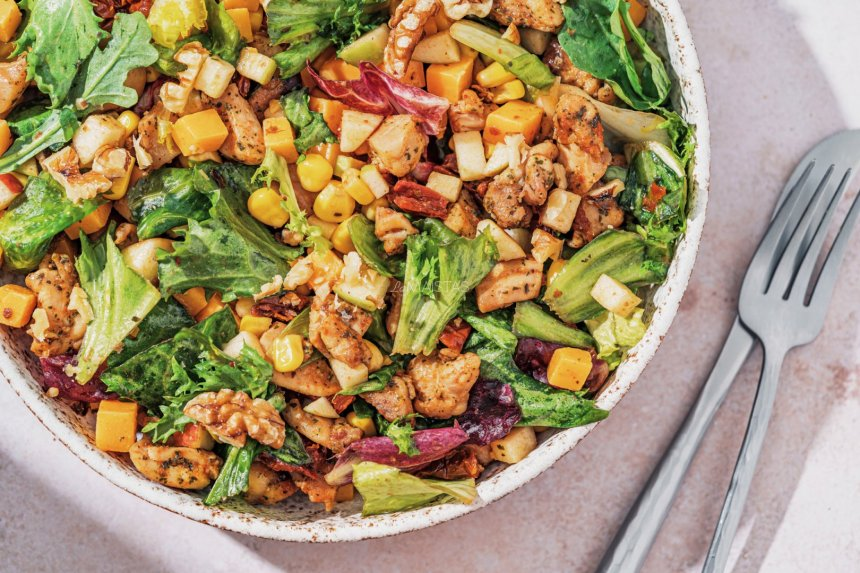

Vištienos salotos su obuoliais ir sūriu
Ingridientai
- 150 gramų salotų mišinio (arba špinatų ar mėgiamų salotų)
- 150 gramų konservuotų kukurūzų
- 100 gramų čederio sūrio (arba fermentinio ar kito mėgiamo)
- 1 vienetas obuolių
- 10 vienetų saulėje džiovintų pomidorų
- 1 sauja graikinių riešutų (nebūtina)
Vištienai:
- 400 gramų vištienos filė (naudojau šlaunelių mėsą, bet tinka ir krūtinėlės filė)
- 0.5 šaukštelio rūkytos paprikos miltelių
- 0.5 šaukštelio džiovintų petražolių
- 0.5 šaukštelio džiovinto raudonėlio
- 0.5 šaukštelio džiovintų bazilikų
- Pagal skonį druskos
- Pagal skonį maltų juodųjų pipirų
- Pagal poreikį alyvuogių aliejaus
Padažui:
- 2 šaukštai alyvuogių aliejaus
- 1 šaukštas citrinų sulčių
- 0.5 šaukštelio medaus
- Pagal skonį druskos
- Pagal skonį maltų juodųjų pipirų
Paruošimas
- Vištienos filė supjaustyti kubeliais, pagardinti druska, pipirais, rūkytos paprikos milteliais, džiovintomis petražolėmis, raudonėliu, baziliku ir išmaišyti, kad visi gabalėliai pasidengtų prieskoniais.
- Į keptuvę pilti aliejaus, įkaitinti, sudėti vištieną ir kepti vis pavartant iki kol iškeps ir apkeps. Atidėti, kad atvėstų.
- Saulėje džiovintus pomidorus supjaustyti mažais gabalėliais, sūrį ir obuolį supjaustyti kubeliais.
- Į dubenį dėti saulėje džiovintus pomidorus, sūrį, berti kukurūzus, sudėti vištieną, salotas ir obuolius.
- Padažui į dubenėlį pilti alyvuogių aliejų, citrinų sultis, dėti medų, berti druskos ir pipirų, išmaišyti. Paragauti, jei norisi, dėti daugiau medaus ar citrinų sulčių.
- Į dubenį su paruoštais ingredientais supilti paruoštą padažą ir išmaišyti.
- Patiekiant salotas galima pagardinti smulkintais graikiniais riešutais.